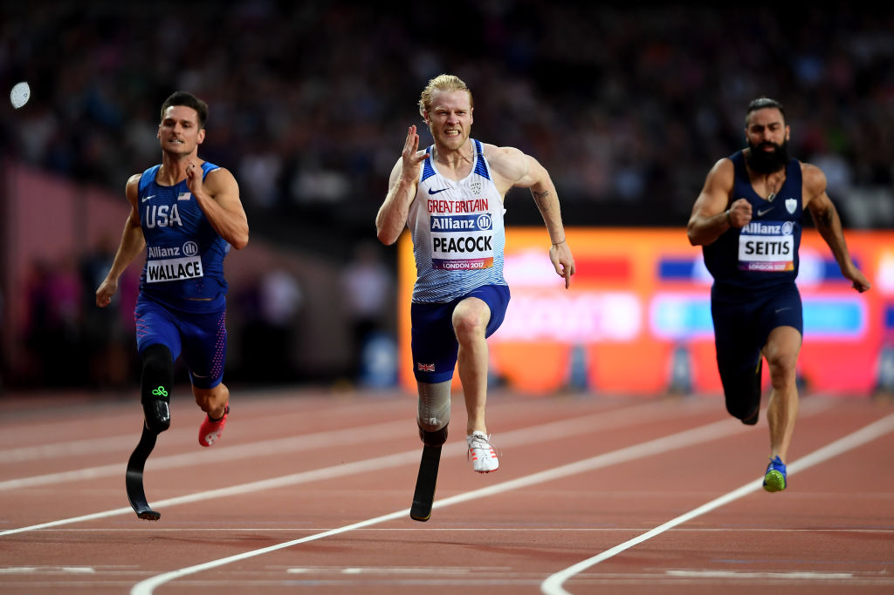

Marcin Oleksy, un futbolista polaco que perdió una pierna en un accidente laboral, se convirtió en el primer jugador amputado en ganar el prestigioso Premio Puskás en 2023. Su increíble gol de chilena para el equipo de Warta Poznań en la liga de fútbol amputado dejó a todos boquiabiertos y demostró que las limitaciones físicas no son un obstáculo para la grandeza en el deporte.
Natalie du Toit, una nadadora imparable
Natalie du Toit es una nadadora sudafricana que perdió una pierna en un accidente de moto a los 17 años. Sin embargo, eso no la detuvo: compitió en los Juegos Olímpicos y Paralímpicos, siendo un símbolo de perseverancia y superación.
Alex Zanardi y su regreso a las pistas
Alex Zanardi, ex piloto de Fórmula 1, perdió ambas piernas en un accidente en 2001. Tras su recuperación, se convirtió en campeón paralímpico de ciclismo en los Juegos de Londres 2012 y Río 2016, demostrando que nada es imposible.
Gerónimo Benavides y su pasión por el fútbol
Gerónimo Benavides es un futbolista argentino que, a pesar de las adversidades, nunca dejó de luchar por su pasión: el fútbol. Jugador con discapacidad, Gerónimo ha sido parte de iniciativas para ayudar a su equipo Platense y ha inspirado a muchos con su compromiso y amor por el deporte.
Taty Castellanos y la inclusión en el fútbol
Taty Castellanos, un jugador que siempre ha abogado por la inclusión en el deporte, ha apoyado a diferentes asociaciones que trabajan con deportistas discapacitados, demostrando que el deporte debe ser un espacio para todos.

La historia de Jonnie Peacock
Jonnie Peacock es un atleta británico que perdió una pierna a causa de una enfermedad cuando era niño. Se convirtió en uno de los velocistas más destacados en los Juegos Paralímpicos, obteniendo varias medallas de oro y sirviendo como inspiración para deportistas de todo el mundo.
Trischa Zorn, la nadadora más laureada de la historia
Trischa Zorn es la atleta paralímpica más laureada de la historia, con un total de 55 medallas (41 de oro) obtenidas entre 1980 y 2004. A pesar de nacer con ceguera total, demostró al mundo que la discapacidad no es un límite para alcanzar la grandeza deportiva.
Mauricio Valencia, orgullo del atletismo adaptado colombiano
Mauricio Valencia es un atleta colombiano especialista en lanzamiento de jabalina y peso. Ha ganado múltiples medallas en los Juegos Paralímpicos y en campeonatos mundiales, destacando por su dedicación y su capacidad de superación en el atletismo adaptado. Es un ejemplo de perseverancia y orgullo para Colombia.